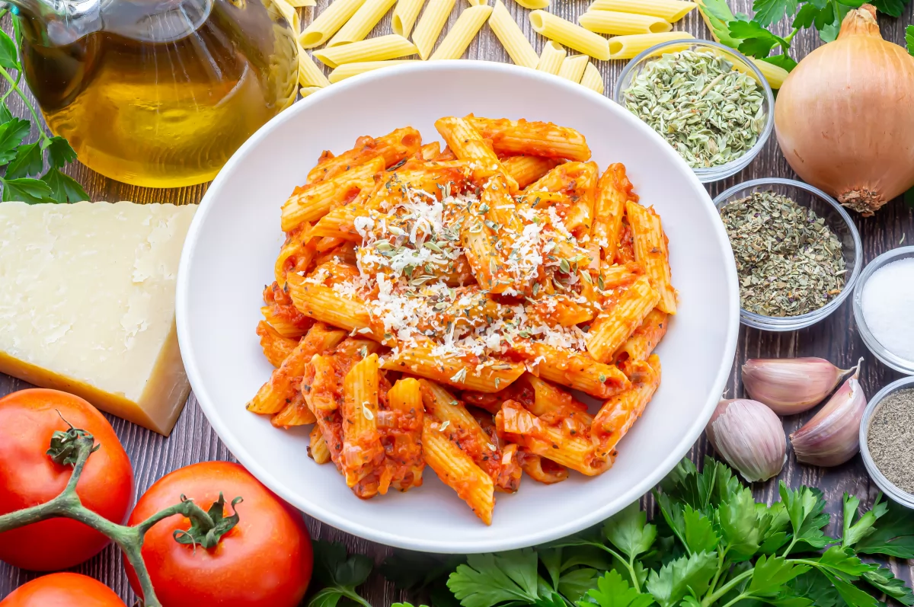
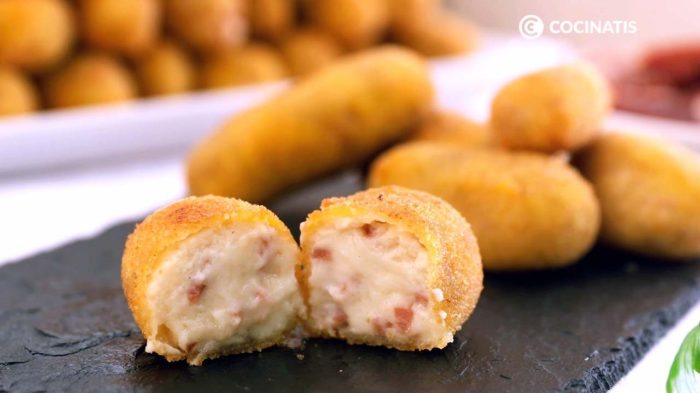
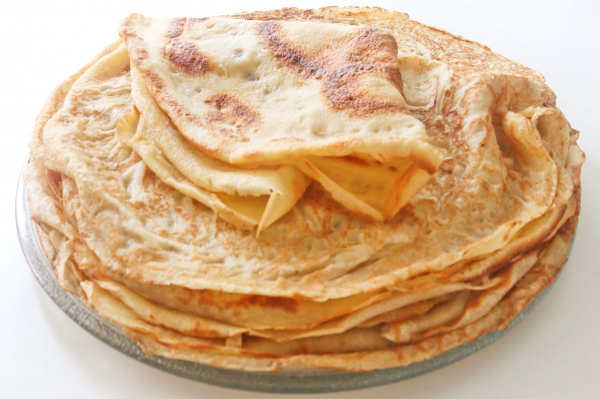
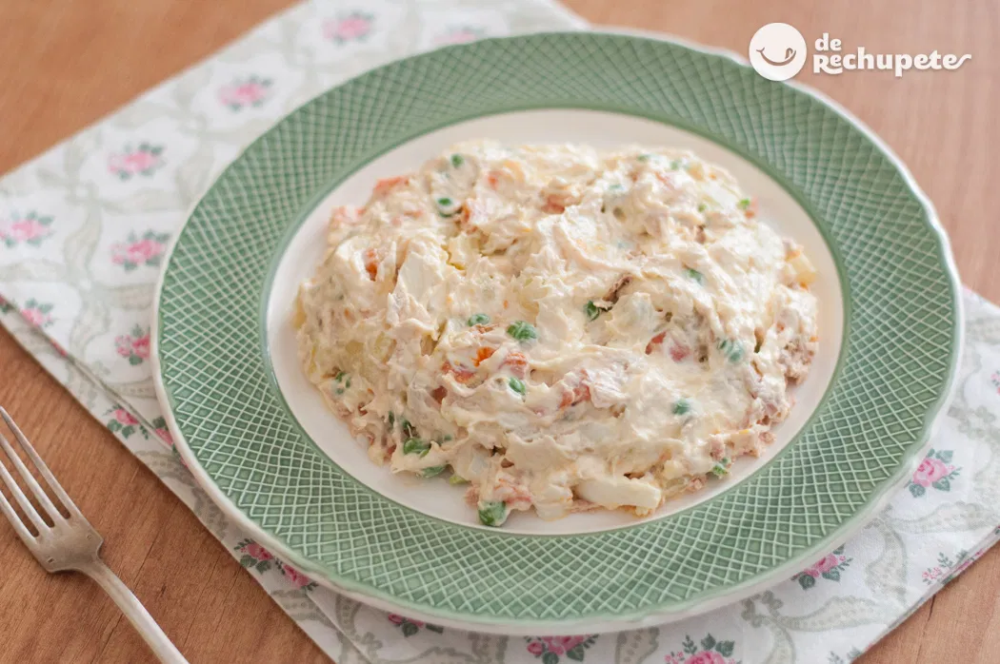
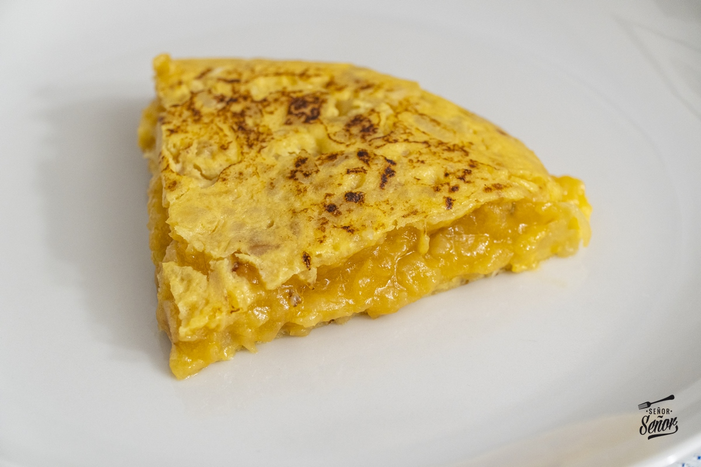
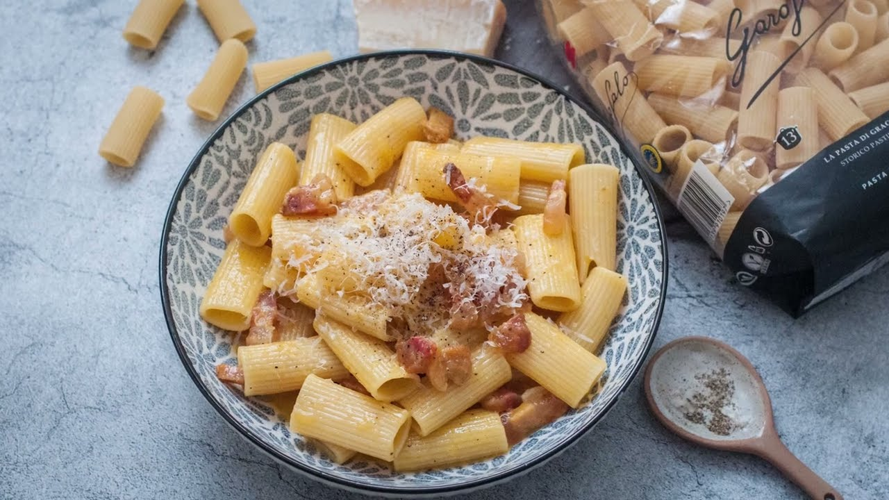
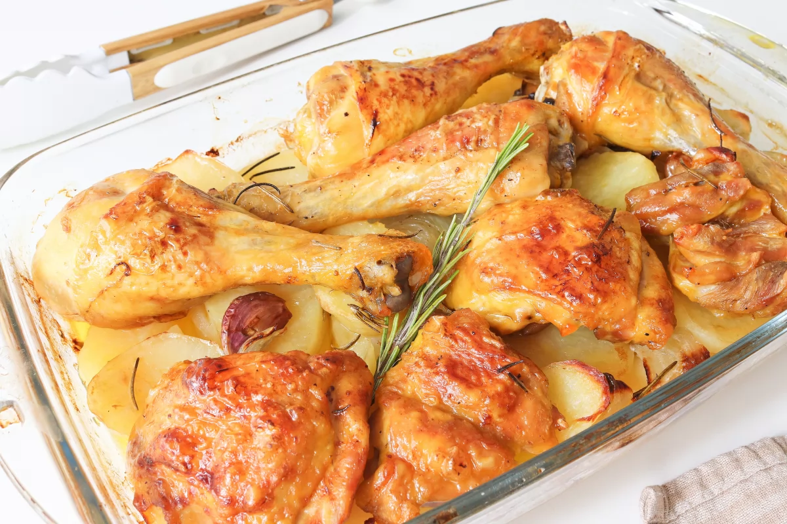

Macarrones con tomate y queso
- 1 cebolla grande
- 4 cucharadas de aceite de oliva
- 4 dientes de ajo
- 800g de tomate en conserva
- 1 o 2 hojas de laurel
- 1 cucharada de albahaca seca
- 1 cucharada de orégano seco
- Pimienta negra molida
- Sal
- 400g de macarrones
- Queso rallado (para servir)
Croquetas de jamón
- 200g de jamón serrano
- 1 cebolleta
- 1 diente de ajo
- 100g de harina
- 100g de mantequilla
- 1l de leche
Crepes
- 1 huevo
- 125g de harina
- 35g de azúcar moreno
- 0,5l de leche
Ensaladilla rusa
- 350g de guisantes
- 1kg de patatas
- 450g de atún en conserva
- 600g de zanahoria
- 4 huevos
- Sal (al gusto)
- Mayonesa
- 12 aceitunas sin hueso
Tortilla de patatas
- 4 patatas
- 2 cebollas
- 4 huevos
- Sal
- Aceite de oliva
Carbonara
- 400g de pasta
- 100g de queso pecorino
- 200g de guanciale
- 4-3 yemas de huevo
- Aceite de oliva virgen extra
- Sal
- Pimienta
Bizcocho

- 1 yogur de limón
- 1 medida de yougur de aceite
- 2 medidas de yougur de azúcar
- 3 medidas de yougur de harina
- 4 huevos
- Levadura
Pollo asado al horno con patatas
- 4 patatas medianas
- 30 ml de aceite de oliva virgen extra
- Sal
- Pimienta
- Media cebolla
- 6 dientes de ajo
- 1,2kg de pollo aproximadamente
- 200ml de vino blanco
- 1 rama de romero